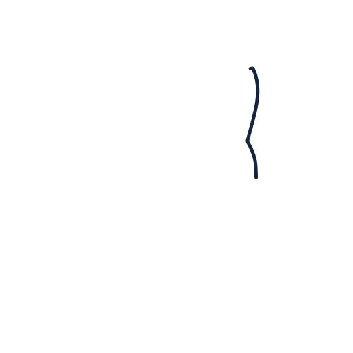
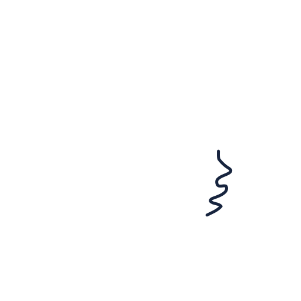
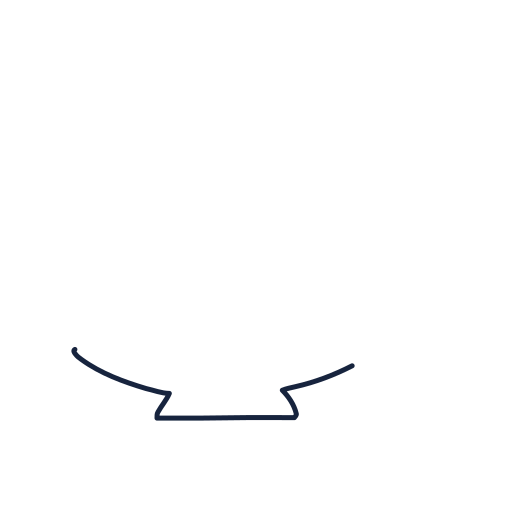
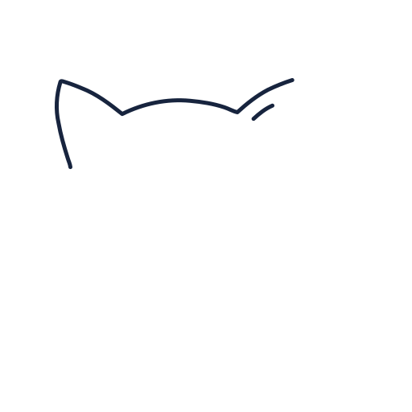
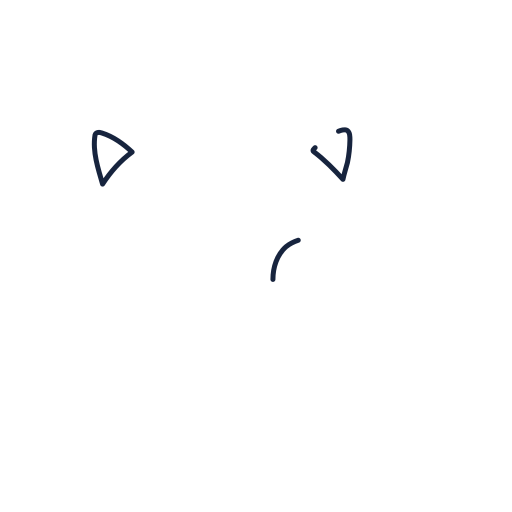
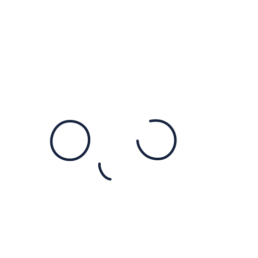
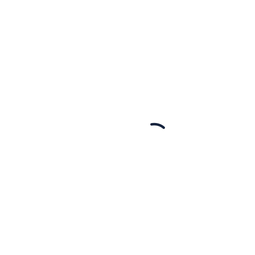
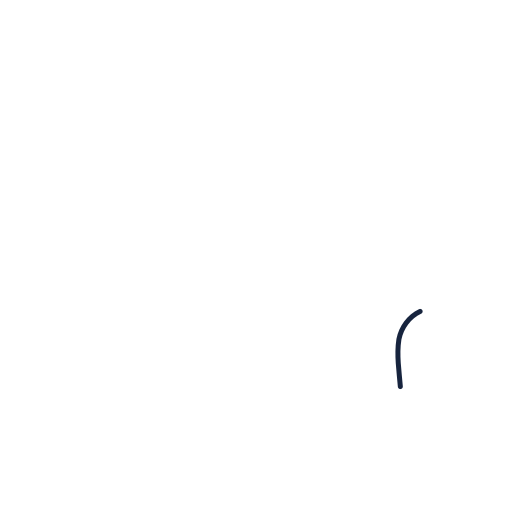

Hình màu nguồn thật
P01 · source_segment_001

oc_path_001 · subpath 1
7 lệnh vẽ · 6 đoạn lệnh nguồn
P02 · source_segment_002

oc_path_001 · subpath 1
13 lệnh vẽ · 12 đoạn lệnh nguồn
P03 · source_segment_003

oc_path_001 · subpath 1
13 lệnh vẽ · 12 đoạn lệnh nguồn
P04 · source_segment_004
oc_path_001 · subpath 1
13 lệnh vẽ · 12 đoạn lệnh nguồn
P05 · source_segment_005

oc_path_001 · subpath 1,2
14 lệnh vẽ · 12 đoạn lệnh nguồn
P06 · source_segment_006

oc_path_001 · subpath 2,3,4
15 lệnh vẽ · 12 đoạn lệnh nguồn
P07 · source_segment_007

oc_path_001 · subpath 4,5,6
15 lệnh vẽ · 12 đoạn lệnh nguồn
P08 · source_segment_008
oc_path_001 · subpath 6
4 lệnh vẽ · 3 đoạn lệnh nguồn
P09 · source_segment_009
oc_path_002 · subpath 1
8 lệnh vẽ · 7 đoạn lệnh nguồn
P10 · source_segment_010
oc_path_003 · subpath 1
5 lệnh vẽ · 4 đoạn lệnh nguồn
P11 · source_segment_011
oc_path_004 · subpath 1,2
14 lệnh vẽ · 12 đoạn lệnh nguồn
P12 · source_segment_012

oc_path_004 · subpath 2
2 lệnh vẽ · 1 đoạn lệnh nguồn
P13 · source_segment_013
oc_path_005 · subpath 1,2
13 lệnh vẽ · 11 đoạn lệnh nguồn
P14 · source_segment_014
oc_path_006 · subpath 1
7 lệnh vẽ · 6 đoạn lệnh nguồn
P15 · source_segment_015
oc_path_007 · subpath 1
7 lệnh vẽ · 6 đoạn lệnh nguồn
P16 · source_segment_016
oc_path_008 · subpath 1
13 lệnh vẽ · 12 đoạn lệnh nguồn
P17 · source_segment_017

oc_path_008 · subpath 1
3 lệnh vẽ · 2 đoạn lệnh nguồn
P18 · source_segment_018
oc_path_009 · subpath 1
6 lệnh vẽ · 5 đoạn lệnh nguồn
P19 · source_segment_019
oc_path_010 · subpath 1
8 lệnh vẽ · 7 đoạn lệnh nguồn
P20 · source_segment_020
oc_path_011 · subpath 1
7 lệnh vẽ · 6 đoạn lệnh nguồn